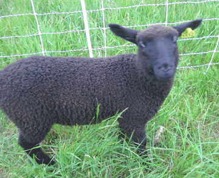
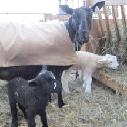
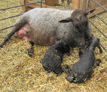

|  | |||||||||
| Barra the Lamb April is a happy, busy time with lambs arriving. Five ewes delivered a single, two sets of twins and two sets of triplets! And the last ewe, Grace, a first-time mom, was waiting. One morning, walking to the barn I could hear a lamb bleating. It was not a good sign. Normally, ewes are attentive to the lamb’s every need and you never hear them bleat. From the doorway, I could see a little black lamb standing all alone, bleating. Nearby, was Grace who showed no interest in her new lamb. I moved them into their own pen and tended to the lamb. A ewe lamb, she was perky, strong and large at 13 - 1/2 pounds. She wanted to nurse, so I positioned her by Grace, but the ewe kept moving away from the lamb. I had to get some colostrum into the lamb, so she would not get cold and weak. I put a halter on Grace and tied her to the pen. With some body pressure against Grace to keep her from moving, I positioned the lamb and was able to get her to nurse. Fortunately, the lamb had a strong instinct to find the teat and nurse. She hung on like a barracuda, tenacious and focused. Little “Barra” had a chance to live. I had to halter Grace five times a day for the first three weeks so Barra could nurse. Although Grace would not nurse the lamb on her own, she did allow the lamb to nurse. |
|||||||||
|  | |||||||||
| Reproduction is a very delicate and complex process. A healthy and stress-free ewe should not have problems, but they can happen, especially with first-time moms. If ewes have problems birthing or taking care of lambs, many people may either sell the ewe, not bred her again or cull the ewe. I gave Grace another chance to be bred, as I felt she would not have problems again. The next year she successfully birthed and nursed twins (photo above), and the year after another set of twins (photo below). She was a wonderful caring mom! |
|||||||||
|  | |||||||||